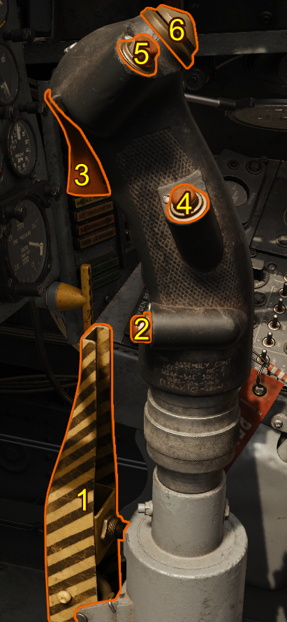
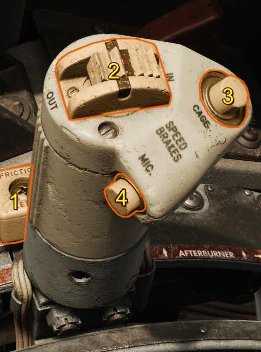

Stick and Throttle
This section covers basic controls of the stick and throttle, for more in depth controls visit the respective system's section.
Stick
The control stick is mechanically connected to the aircraft's hydraulic systems for the aileron and horizontal stabilizer hydraulic actuators.

| Reference | Name |
|---|---|
| 1 | Damper Emergency Disconnect Switch Lever |
| 2 | Nose Wheel Steering Button |
| 3 | Trigger |
| 4 | Radar Reject Button |
| 5 | Pickle Button |
| 6 | Trim Hat |
Note
Hide the stick by clicking the base.
Trim Hat
A trim hat actuates the lateral and longitudinal trim servos.
Nose Wheel Steering
The nose wheel steering button is located near the pinky. Pressing the nose wheel steering button engages the nose wheel steering and drops the mechanical link into the nose wheel assembly.
Note
If the nosewheel is not currently aligned with the mechanical linkage, the pilot may need to move the linkage to the current nose wheel rotation by applying the rudder pedals in the desired direction until the system connects.
Trigger and Bomb Button
The trigger and bomb buttons are used to release weapons. Specifically, the triggers used for air-to-air missiles and guns and the bomb button is used to release air-to-ground ordnance.
Note
The trigger consists of two stages. The first stage activates the gun camera and can later be viewed. The second stage fires the gun.
Throttle
Fuel flow to the engine is mechanically controlled by the pilot via the throttle. The engine fuel control system merely delivers and regulates the fuel.

| Reference | Name |
|---|---|
| 1 | Throttle Friction Lever |
| 2 | Speed Brake Switch |
| 3 | Microphone Button |
| 4 | Sight Electrical Caging Button and LABS Vertical Gyro Caging Button |
Throttle Friction Lever
The Throttle Friction Lever adjust how much friction the throttle has. Moving the lever forward increases the friction on the throttle
Speed Brake Switch
The speed brake switch will actuate the speed brake. It has 3 positions, OUT/OFF/IN. The OUT position will deploy the speed brake. The OFF position will stop all movement of the speed brake. The IN position will retract the speed brake
Microphone Button
The microphone button is a press-to-talk actuation that turns the pilots microphone hot over the aircraft's radio.
Sight Electrical Caging Button and LABS Vertical Gyro Caging Button
Pressing the sight electrical caging button stabilizes the sight gyro reticle image by caging the sight gyros. This button also serves as the LABS vertical gyro caging button.